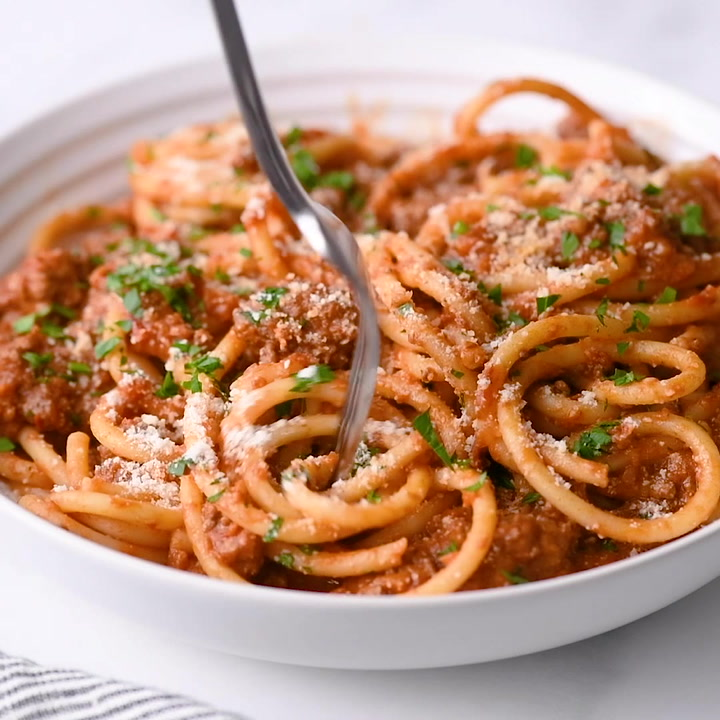

Spaghetti Bolognese Recipe

Description
This Spaghetti Bolognese is a rich and hearty Italian classic, featuring a savory meat sauce served over al dente spaghetti. Perfect for a family dinner.
Ingredients
- 1 pound ground beef
- 1 onion, chopped
- 2 cloves garlic, minced
- 1 can (28 ounces) crushed tomatoes
- 1/4 cup tomato paste
- 1/2 cup red wine (optional)
- 1 teaspoon dried basil
- 1 teaspoon dried oregano
- Salt and pepper to taste
- 12 ounces spaghetti
- Grated Parmesan cheese, for serving
Steps
- In a large skillet, cook ground beef, onion, and garlic over medium heat until meat is browned.
- Stir in crushed tomatoes, tomato paste, red wine, basil, oregano, salt, and pepper. Simmer for 30 minutes.
- Cook spaghetti according to package instructions; drain.
- Serve sauce over spaghetti and top with grated Parmesan cheese.